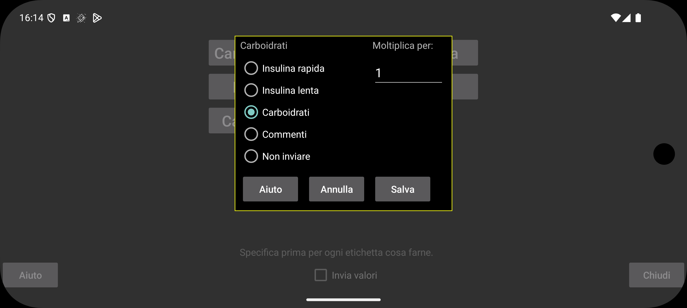

ar be de es fr hi it ja nl pl pt ru tr uk uz zh en
Allo stesso modo che per Libreview, puoi anche specificare come rappresentare i valori tramite il server Nightscout in Juggluco.
Seleziona come i valori in Juggluco inseriti sotto una particolare etichetta debbano essere inviati a Libreview. È possibile inviare più di un tipo di valore con la stessa etichetta Libreview. Ad esempio, se registri carboidrati e cibi a base di glucosio puro sotto etichette separate in Juggluco, puoi specificare per entrambi che debbano essere inviati come Carbohydrate a Libreview.
Per Carbohydrate, è possibile moltiplicare il valore fornito in Juggluco per un certo numero, in modo da poter trasformare altre unità in grammi. Se in Juggluco conti porzioni da 10 grammi, puoi inserire qui 10, in modo che i grammi vengano inviati a Libreview.
Comments significa che il valore è inviato a Libreview come se avessi aggiunto commenti in Librelink. Se specifichi commenti qui, viene inviata l'etichetta più il numero inserito per quell'etichetta. Ad esempio: "Bike 50", se avessi un'etichetta "Bike" e avessi inserito "50" sotto quell'etichetta. "Bike 50" sarà mostrato sotto il grafico del "Daily log" in Libreview all'orario specificato.